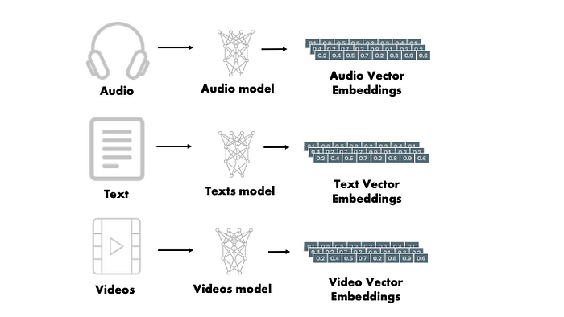

Embedding 词嵌入#
向量Embedding的核心是指在数学空间中将单词、句子甚至整个文档表示为密集的低维向量的过程。与依赖于稀疏表示(如one-hot编码)的传统方法不同，向量Embeddings封装了单词之间的语义关系，并使算法能够理解它们的上下文含义。
 每个单词都嵌入到大小为 512 的向量中。我们将用这些简单的框表示这些向量
Tokenization 分词#
我们首先来看一下几种不同的分词粒度。最直观的分词是单词分词法（word base）。单词分词法将一个word作为最小元，也就是根据空格或者标点分词。
举个例子：Today is Sunday用word-base来进行分词会变成[‘Today’, ‘is’, ‘Sunday’]
还有就是单字分词法（character-base）。单字分词法会穷举所有出现的字符，所以是最完整的
举个例子：上面的内容单字分词法会生成[‘T’, ‘o’, ‘d’, …, ‘a’, ‘y’]
还有就是子词分词法，会把上面的句子分成最小可分的子词[‘To’, ‘day’, ‘is’, ‘S’, ‘un’, ‘day’]。子词分词法有很多不同取得最小可分子词的方法，例如BPE（Byte-Pair Encoding，字节对编码法），WordPiece，SentencePiece，Unigram等等
分词方法 |
特点 |
被提出的时间 |
典型模型 |
|---|---|---|---|
BPE |
采用合并规则，可以适应未知词 |
2016年 |
GPT-2、RoBERTa |
WordPiece |
采用逐步拆分的方法，可以适应未知词 |
2016年 |
BERT |
Unigram LM |
采用无序语言模型，训练速度快 |
2018年 |
XLM |
SentencePiece |
采用汉字、字符和子词三种分词方式，支持多语言 |
2018年 |
T5、ALBERT |
各大LLM的词汇表大小和性能
名称 |
词表长度↑ |
中文平均长度↓ |
英文平均长度↓ |
中文处理时间↓ |
英文处理时间↓ |
|---|---|---|---|---|---|
LLaMA |
32000 |
62.8 |
32.8 |
02:09 |
01:37 |
BELLE |
79458 |
24.3 |
32.1 |
00:52 |
01:27 |
MOSS |
106072 |
24.8 |
28.3 |
07:08 |
00:49 |
GPT4 |
50281 |
49.9 |
27.1 |
00:07 |
00:08 |
BLOOM/Z |
250680 |
23.4 |
27.6 |
00:46 |
01:00 |
ChatGLM |
130344 |
23.6 |
28.7 |
00:26 |
00:39 |
GPT族：Byte-Pair Encoding (BPE)#
Byte Pair Encoding (BPE) 算法最初是作为一种数据压缩技术被提出的。然而，在自然语言处理（NLP）领域，BPE 被重新发现并用作一种有效的子词分词方法，特别是在处理语言模型和机器翻译等任务时。提出 BPE 用于 NLP 的原因主要有以下几点：
处理未知词汇： 传统的词汇表方法面临一个挑战，即如何处理训练数据中未出现的单词（即未知词汇或 OOV，Out-Of-Vocabulary）。BPE 方法通过将单词分解为更小的单位（子词）来解决这个问题。即使是未见过的单词，也有可能由已见过的子词组合而成，因此模型能够更好地处理和理解这些新单词。
减小词汇表大小： 在大型文本数据集中，完整的词汇表可能非常庞大，这对模型的存储和计算效率都是一个挑战。BPE 通过构建一个更小、更高效的子词集来缩减词汇表的大小，同时仍保持了对原始文本的良好覆盖。这样不仅减少了模型的参数量，还提高了训练和推理的效率。
改善语言模型的泛化能力： 由于 BPE 的子词单位能够跨越单词边界，它可以帮助模型更好地学习和理解语言的词根、前缀和后缀等形态变化，从而提高模型对词形变化和复合词的处理能力。这种对词形变化的敏感性有助于模型在各种语言任务中更好地泛化。
适应性强： BPE 算法非常灵活，可以根据需要调整子词的数量，这使得它可以根据不同的应用场景和资源限制来优化性能。这种适应性使得 BPE 成为了一种在各种语言和任务中都非常实用的分词方法。
语言无关性： BPE 不依赖于任何特定语言的语法或词汇规则，使其成为一种通用的分词方法。这意味着它可以被应用于不同的语言，而无需对每种语言做特殊的适配或修改。
具体样例#
让我们通过一个简化的中文样例来详细展示BPE分词的步骤。我们将使用以下句子作为样例文本：
“猫喜欢吃鱼，狗喜欢吃肉，人喜欢吃鱼，人喜欢吃肉”
我们将按以下步骤展示BPE算法的工作过程：
初始化词汇表
计算所有相邻字符对的频率
选择频率最高的字符对进行合并
重复步骤2和3指定次数
由于是演示，我们将执行少量的合并操作，假设合并次数为4次。
首先，我们将文本初始化为词汇表，包括每个字符及其频率：
{
'猫': 1, '喜': 4, '欢': 4, '吃': 4,
'鱼': 2, '，': 7, '狗': 1, '肉': 2,
'人': 2
}
接下来，我们将展示每一步的合并过程。
## 第一次合并：首先，我们计算所有相邻字符对的频率，并找到频率最高的字符对。在这个例子中，"喜欢" 是出现频率最高的字符对，出现了4次。我们将其合并为一个新的字符 "喜欢"。
# {('猫', '喜'): 1, ('喜', '欢'): 4, ('欢', '吃'): 4, ('吃', '鱼'): 2, ('鱼', '，'): 2, ('，', '狗'): 1, ('狗', '喜'): 1, ('吃', '肉'): 2, ('肉', '，'): 1, ('，', '人'): 2, ('人', '喜'): 2, ('肉', '</w>'): 1}
{'猫': 1, '喜欢': 4, '吃': 4, '鱼': 2, '，': 3, '狗': 1, '肉': 2, '人': 2}
## 第二次合并：接下来，我们再次查找频率最高的字符对。这次 "喜欢吃" 是出现频率最高的，我们将其合并。
# 合并后的词汇表变为：
# {('猫', '喜欢'): 1, ('喜欢', '吃'): 4, ('吃', '鱼'): 2, ('鱼', '，'): 2, ('，', '狗'): 1, ('狗', '喜欢'): 1, ('吃', '肉'): 2, ('肉', '，'): 1, ('，', '人'): 2, ('人', '喜欢'): 2, ('肉', '</w>'): 1}
{'猫': 1, '喜欢吃': 4, '鱼': 2, '，': 3, '狗': 1, '肉': 2, '人': 2}
## 第三次合并：再次重复上述过程，这次我们注意到 "喜欢吃鱼" 、 "鱼，"等好几个组合频率都是2。这里为了演示，我们选择 "喜欢吃鱼" 进行合并（实际上这两个字符对的频率相同，可以任选其一）。
# 合并后的词汇表为
# {('猫', '喜欢吃'): 1, ('喜欢吃', '鱼'): 2, ('鱼', '，'): 2, ('，', '狗'): 1, ('狗', '喜欢吃'): 1, ('喜欢吃', '肉'): 2, ('肉', '，'): 1, ('，', '人'): 2, ('人', '喜欢吃'): 2, ('肉', '</w>'): 1}
{'猫': 1, '喜欢吃鱼': 2, '，': 3, '狗': 1, '喜欢吃': 2, '肉': 2, '人': 2}
## 第四次合并：最后一次合并，同上面的步骤一样，我们选择了“喜欢吃鱼，”进行合并。
# 合并后的词汇表如下：
# {('猫', '喜欢吃鱼'): 1, ('喜欢吃鱼', '，'): 2, ('，', '狗'): 1, ('狗', '喜欢吃'): 1, ('喜欢吃', '肉'): 2, ('肉', '，'): 1, ('，', '人'): 2, ('人', '喜欢吃鱼'): 1, ('人', '喜欢吃'): 1, ('肉', '</w>'): 1}
{'猫': 1, '喜欢吃鱼，': 2, '狗': 1, '喜欢吃': 2, '肉': 2, '人': 2, '，': 1}
经过4次合并后，我们得到了一个包含了更长字符序列的新词汇表。通过这个过程，BPE算法能够逐步构建出更长的、更意义丰富的字符序列，这有助于提高分词的精度和效率。需要注意的是，这里的例子非常简化，实际应用中的BPE算法会在一个更大的数据集上执行更多的合并操作，以构建出一个更完整、更有效的分词词汇表。不同的合并方式得到的词表也可能不同。
代码#
import re, collections
def get_stats(vocab):
pairs = collections.defaultdict(int)
for word, freq in vocab.items():
symbols = word.split()
for i in range(len(symbols)-1):
pairs[symbols[i],symbols[i+1]] += freq
return pairs
def merge_vocab(pair, v_in):
v_out = {}
bigram = re.escape(' '.join(pair))
p = re.compile(r'(?<!\S)' + bigram + r'(?!\S)')
for word in v_in:
w_out = p.sub(''.join(pair), word)
v_out[w_out] = v_in[word]
return v_out
def build_vocab(text):
counter = collections.defaultdict(int)
for line in text:
words = line.split()
for word in words:
counter[word] += 1
return {" ".join(key) + " </w>": value for key, value in counter.items()}
# 示例文本
test_corpus = "猫喜欢吃鱼，狗喜欢吃肉，人喜欢吃鱼，人喜欢吃肉"
vocab = build_vocab(test_corpus.split('\n'))
num_merges = 4
for i in range(num_merges):
pairs = get_stats(vocab)
print(pairs)
if not pairs:
break
best = max(pairs, key=pairs.get)
vocab = merge_vocab(best, vocab)
print(vocab)
BERT族：Word-Piece#
wordpiece算法可以看作是BPE的变种。不同的是，WordPiece基于概率生成新的subword而不是下一最高频字节对。WordPiece算法也是每次从词表中选出两个子词合并成新的子词。BPE选择频数最高的相邻子词合并，而WordPiece选择使得语言模型概率最大的相邻子词加入词表。